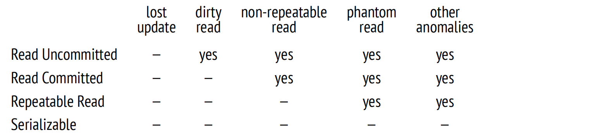
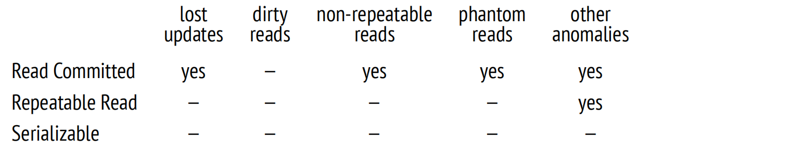

第 2 章：隔离性
2.1 一致性
关系型数据库的关键特征是它们能够保证数据的一致性，即数据的正确性。
众所周知，在数据库层面可以创建完整性约束，例如 NOT NULL 或 UNIQUE。数据库系统确保这些约束永远不会被破坏，从而保证数据的完整性。
如果所有需要的约束都能在数据库层面上制定，那么一致性就能得到保证。但有些条件过于复杂，无法通过数据库层面的约束来实现，例如，它们可能一次涉及多个表。而且即使某个约束可以在数据库中定义，但由于某些原因没有被定义，也并不意味着这个约束条件可以被违反。
因此，数据的一致性比完整性更严格，但是数据库系统并不清楚"一致性"实际上意味着什么。如果应用程序在不破坏完整性的情况下破坏了一致性，那么数据库系统是没有办法发现的。因此，必须由应用程序来制定数据一致性的标准，而且我们必须相信它编写得正确，且永远不会有任何错误。
但是，如果应用程序始终只执行正确的操作符序列，那么数据库系统的作用何在呢？
首先，正确的操作符序列可以暂时破坏数据一致性，并且 — 虽然这听起来可能很奇怪 — 这是完全正常的。
一个老套但浅显易懂的例子是将资金从一个账户转移到另一个账户。一致性规则可能是这样的：资金转移绝不能改变受影响账户的总余额。将此规则表述为 SQL 中的完整性约束是相当困难的 (尽管可能)，因此让我们假设它是在应用程序层面定义的，并且对数据库系统保持不透明。转账包括两个操作：第一个操作从其中一个账户中提取一些钱，而第二个操作将这笔钱添加到另一个账户。第一个操作破坏了数据的一致性，但第二个操作恢复了一致性。
如果第一个操作成功了，但第二个操作失败了 (因为一些故障)，数据一致性将被打破。这种情况是无法接受的，但是在应用程序层面检测和解决它们需要付出很大的努力。幸运的是，这并不是必要的 — 如果数据库系统知道这两个操作构成一个不可分割的整体，即一个事务，那么这个问题完全可以由数据库系统本身解决。
但这里还有一个更微妙的方面。事务本身是绝对正确的，但当并行运行时，事务可能会开始不正确地运行。这是因为属于不同事务的操作经常会被混合在一起。如果数据库系统先完成一个事务的所有操作，然后再进行下一个事务，就不会出现此类问题，但顺序执行的性能会低得令人难以置信。
真正的事务同时执行只能在具有适当硬件的系统上实现：多核处理器、磁盘阵列等。但同样的推断也适用于以分时模式顺序执行命令的服务器。为了概括起见，这两种情况有时统称为并发执行。
正确的事务在一起运行时表现异常会导致并发异常，或称为并发现象。
此处是一个简单的例子。为了从数据库中获取一致的数据，应用程序至少不能看到其他未提交事务所做的任何更改。否则 (如果某些事务回滚)，它将看到从未存在过的数据库状态。这种异常称为脏读，还有很多其他更为复杂的异常。
当并发运行事务时，数据库必须保证这种执行的结果与某种可能的顺序执行结果相同。换句话说，它必须将事务彼此隔离，从而处理任何可能的异常。
总而言之，事务是一组将数据库从一个正确状态转变到另一个正确状态 (一致性) 的操作，前提是它完全执行 (原子性) 并且不受其他事务的影响 (隔离性)。这个定义结合了 ACID 首字母缩写中前三个字母所暗示的要求。它们交织在一起，一起讨论它们是有意义的。事实上，持久性要求也几乎不可能分开：在系统崩溃之后，系统中可能仍然包含一些由未提交事务所做的更改，你必须采取措施来恢复数据的一致性。
因此，即使数据库系统对隐含的一致性规则一无所知，它也通过考虑事务边界来帮助应用程序维护数据一致性。
不幸的是，完全隔离很难实现，并且会对性能产生负面影响。大多数实际系统使用较弱的隔离级别，这可以防止一些异常，但并非全部。这意味着维护数据一致性的部分工作落在了应用程序上。这也正是为什么了解系统中使用的隔离级别非常重要的原因，以及在这个级别下保证了什么、没有保证什么，以及如何确保在这种条件下代码是正确的。
2.2 SQL 标准中的隔离级别与异常
SQL 标准定义了四种隔离级别 1。这些级别由并发事务执行期间可能发生或不发生的异常所定义。因此，在谈论隔离级别时，我们需要从异常开始讲起。
需要记住的是，标准是一种理论概念：它影响了实践，但实践在许多方面与之不同。这就是为什么此处所有的例子都是假设性的。虽然这些例子处理的是银行账户上的事务，它们非常直观，但我必须承认，它们与实际的银行操作无关。
有趣的是，实际的数据库理论也与标准有所偏离：它是在标准被采纳之后发展起来的，而实践已经领先很多。
2.2.1 更新丢失
当两个事务读取同一行表数据，然后其中一个事务更新该行，最后另一个事务在不考虑第一个事务所做的任何更改的情况下更新同一行时，就会发生更新丢失异常。
假设有两个事务打算使同一账户的余额增加 100 美元。第一个事务读取了当前值 ($100)，然后第二个事务读取了相同的值。第一个事务增加了余额 (使余额变为 1100 美元)，并将新值写入数据库中。第二个事务也是如此：在增加余额后获得 1100 美元，并写入该值。结果，客户损失了 100 美元。
在所有隔离级别下，SQL 标准都禁止更新丢失。
2.2.2 脏读与读未提交
当一个事务读取了另一个事务所做的未提交的更改时，就会发生脏读异常。
例如，第一个事务将 100 美元转移到一个空账户，但没有提交此更改。另一个事务读取了帐户的状态 (已被更新但还未提交)，并允许客户提取这笔钱 — 即使第一个事务中断并且其更改被回滚，所以帐户其实是空的。
SQL 标准允许在读未提交隔离级别下发生脏读。
2.2.3 不可重复读与读已提交
当一个事务两次读取同一行数据，而在这两次读取之间，另一个事务更新 (或删除) 了这一行并提交了更改时，就会发生不可重复读异常。最终，第一个事务得到了不同的结果。
例如，假设有一条一致性规则，禁止银行账户中出现负余额。第一个事务准备使账户余额减少 100 美元。它检查当前值，得到 1000 美元，因此认定此操作是可行的。同时，另一个事务从该账户中取出了所有钱并提交更改。如果第一个事务在此时再次检查余额，它会得到 0 美元 (但取钱的决定已经做出，那么这个操作会导致透支)。
SQL 标准允许在读未提交和读已提交隔离级别下发生不可重复读。
2.2.4 幻读与可重复读
当同一个事务执行两次相同的查询，返回一组满足特定条件的行，而在这两次查询期间，另一个事务添加了一些满足此条件的其他行，并提交了此更改，就会出现幻读异常。最终，第一个事务获得了两组不同的行。
例如，假设有一个一致性规则，禁止客户拥有三个以上的帐户。第一个事务打算开一个新帐户，因此它检查当前有多少个帐户可用 (假设有两个)，并认定此操作是可行的。此时，第二个事务也为该客户开了一个新帐户并提交了更改。如果第一个事务再次检查打开的账户数量，它会得到三个 (但它已经在开另一个账户，客户最终拥有了四个账户)。
SQL 标准允许在读未提交、读已提交和可重复读隔离级别下发生幻读。
2.2.5 无异常与可串行化
SQL 标准还定义了可串行化隔离级别，该级别不允许任何异常。这与禁止更新丢失、脏读、不可重复读和幻读不同。事实上，已知异常的数量远远超过标准定义的数量，还有未知数量的未知异常。
可串行化隔离级别必须防止任何异常。这意味着应用程序开发人员不必考虑隔离问题。如果事务在单独运行时执行正确的操作符序列，那么并发执行也不能破坏数据的一致性。
为了阐述这个概念，我将使用标准中提供的一个众所周知的表格；为清晰起见，此处还添加了最后一列：
2.2.6 为什么是这些异常？
为什么标准只提到了某些可能的异常，而且为什么是这些异常呢？
似乎没有人确切知道。但很有可能是在制定最初版本的标准时，其他异常没有被考虑进去，因为那时理论远远落后于实践。
此外，当时的假设是隔离必须基于锁。广泛使用的两阶段锁定协议 (2PL) 要求事务在执行期间锁定受影响的行，并在完成时释放锁。简单来说，事务获取的锁越多，它与其他事务的隔离程度就越好。相应地，系统的性能就越差，因为事务开始排队访问同一行，而不是并发运行。
我相信，在很大程度上，标准隔离级别之间的区别是由实现它们所需的锁数量来定义的。
如果要更新的行对写入锁定但对读取不锁定，我们便会得到读未提交隔离级别，允许在提交前读取数据。
如果要更新的行对读取和写入都锁定，我们便会得到读已提交隔离级别：禁止读取未提交的数据，但如果查询多次运行，可能返回不同的值 (不可重复读)。
在所有操作中锁定要读取和更新的行，我们便会得到可重复读隔离级别：重复查询将返回相同的结果。
然而，可串行化隔离级别带来了一个问题：无法锁定尚不存在的行。这为幻读的发生留下了可能性：一个事务可以添加满足先前查询条件的行，并且这一行将出现在下一个查询结果中。
因此，常规的锁无法提供完全隔离：要实现这一点，我们必须锁定条件 (谓词) 而不是行。谓词锁早在 1976 年 System R 开发时就被引入了；然而，它们的实际适用范围有限，只适用于那些很容易判断两个不同谓词是否可能冲突的简单条件。据我所知，在任何系统中从未实现过预期形式的谓词锁。
2.3 PostgreSQL 中的隔离级别
随着时间的推移，基于锁的事务管理协议被快照隔离 (SI) 协议所取代。这种方法的思想是，每个事务访问的是在特定时间点呈现的数据一致性快照。这个快照包括在快照生成之前提交的所有当前更改。
快照隔离最大限度地减少了所需的锁数量。实际上，只有在尝试并发更新时，行才会被锁定。在所有其他情况下，操作均可以并发执行：写操作不会锁定读操作，读操作也永远不会锁定任何东西。
PostgreSQL 使用了 SI 协议的多版本形式。多版本并发控制意味着，在任何时候数据库系统都可以包含同一行的多个版本，因此 PostgreSQL 可以将适当的版本包含在快照中，而不是中止尝试读取老版本数据的事务。
基于快照，PostgreSQL 的隔离级别与标准中指定的要求有所不同 — 实际上，它甚至更加严格。脏读从设计上是禁止的。技术上，你可以指定读未提交级别，但其行为与读已提交相同，因此我将不再提及这个级别。可重复读既不允许不可重复读，也不允许幻读 (尽管它不保证完全隔离)。但在某些情况下，读已提交隔离级别存在更新丢失的风险。
在探讨隔离的内部机制之前，让我们从用户的角度分别讨论这三个隔离级别。
为此，我们将创建一个账户表；Alice 和 Bob 分别拥有 1000 美元，但 Bob 拥有两个账户：
=> CREATE TABLE accounts(
id integer PRIMARY KEY GENERATED BY DEFAULT AS IDENTITY,
client text,
amount numeric
);
=> INSERT INTO accounts VALUES
(1, 'alice', 1000.00), (2, 'bob', 100.00), (3, 'bob', 900.00);2.3.1 读已提交
不会脏读。很容易验证无法读取脏数据。让我们开启一个事务。默认情况下，它使用读已提交 2 隔离级别：
=> BEGIN;
=> SHOW transaction_isolation;
transaction_isolation
−−−−−−−−−−−−−−−−−−−−−−−
read committed
(1 row)更确切地说，默认级别由以下参数设置，可以按需修改：
=> SHOW default_transaction_isolation;
default_transaction_isolation
−−−−−−−−−−−−−−−−−−−−−−−−−−−−−−−
read committed
(1 row)已开启的事务从客户账户中提取一些资金，但尚未提交这些更改。它会看到自己的更改，因为这总是被允许的：
=> UPDATE accounts SET amount = amount - 200 WHERE id = 1;
=> SELECT * FROM accounts WHERE client = 'alice';
id | client | amount
−−−−+−−−−−−−−+−−−−−−−−
1 | alice | 800.00
(1 row)在第二个会话中，我们启动另一个事务，此事务也在读已提交级别下运行：
=> BEGIN; => SELECT * FROM accounts WHERE client = 'alice'; id | client | amount −−−−+−−−−−−−−+−−−−−−−−− 1 | alice | 1000.00 (1 row)
可以预见的是，第二个事务看不到任何未提交的更改 — 因为脏读是被禁止的。
不可重复读。现在提交第一个事务的更改。然后第二个事务执行相同的查询：
=> COMMIT;=> SELECT * FROM accounts WHERE client = 'alice'; id | client | amount −−−−+−−−−−−−−+−−−−−−−− 1 | alice | 800.00 (1 row) => COMMIT;
查询接收到的是更新后的数据版本 — 这正是在读已提交级别下允许的不可重复读异常。
一个实用的见解是：在事务中，你不能基于之前操作符读取的数据做出任何决策，因为中间的一切都可能发生变化。这里有一个例子，其变体经常出现在应用程序代码中，可以被认为是一个经典的反模式：
IF (SELECT amount FROM accounts WHERE id = 1) >= 1000 THEN
UPDATE accounts SET amount = amount - 1000 WHERE id = 1;
END IF;在检查和更新期间，其他事务可以随意改变账户的状态，因此这样的"检查"是毫无作用的。为了更好地理解，你可以想象其他事务的随机操作符被"楔入"到当前事务的操作符之间。例如，像这样：
IF (SELECT amount FROM accounts WHERE id = 1) >= 1000 THEN
| UPDATE accounts SET amount = amount - 200 WHERE id = 1;
| COMMIT;
UPDATE accounts SET amount = amount - 1000 WHERE id = 1;
END IF;如果一旦重新排列操作符就出现了问题，代码便是不正确的。不要自欺欺人地认为永远不会遇到这种麻烦：任何可能出错的事情都会出错。这类错误很难复现，因此，修复它们是一项真正的挑战。
你该如何修正此代码？有几个选项：
-
使用声明式代码替换过程式代码。
例如，在这个特定案例中，很容易将 IF 语句转换为 CHECK 约束：
ALTER TABLE accounts ADD CHECK amount >= 0;
现在你不需要在代码中进行任何检查：只需简单地运行命令，并处理在尝试违反完整性约束时引发的异常就足够了。
-
使用单个 SQL 操作符。
如果一个事务在另一个事务的操作符之间的时间间隙内提交，那么数据一致性可能会受到影响，从而改变数据的可见性。如果只有一个操作符，则不存在这样的间隙。
PostgreSQL 有足够的能力用单个 SQL 语句解决复杂的任务。特别是，它提供了可以包含诸如 INSERT、UPDATE、DELETE 此类操作符的通用表达式 (CTE)，以及实现以下逻辑的 INSERT ON CONFLICT 操作符：如果行不存在，则插入；否则执行更新。
-
使用显式锁定。
最后的手段是手动对所有需要的行 (SELECT FOR UPDATE) 甚至整个表 (LOCK TABLE) 设置排它锁。这种方法总是有效的，但它使 MVCC 的所有优势都失效了：一些本可以并发执行的操作将顺序执行。
读偏序。然而，事情并非总是那么简单。PostgreSQL 的实现方式允许一些其他鲜为人知的异常，这些异常并不受标准约束。
假设第一个事务已经开始在 Bob 的账户之间转移资金：
=> BEGIN;
=> UPDATE accounts SET amount = amount - 100 WHERE id = 2;与此同时，另一个事务开始遍历 Bob 所有的账户以计算它们的总余额。它从第一个帐户开始 (当然，查看的是它之前的状态)：
=> BEGIN; => SELECT amount FROM accounts WHERE id = 2; amount −−−−−−−− 100.00 (1 row)
此时，第一个事务成功完成：
=> UPDATE accounts SET amount = amount + 100 WHERE id = 3;
=> COMMIT;第二个事务读取第二个账户的状态 (并且看到已经更新的值)：
=> SELECT amount FROM accounts WHERE id = 3; amount −−−−−−−−− 1000.00 (1 row) => COMMIT;
结果，第二个事务得到了 1100 美元，因为它读取了不正确的数据。这种异常称为读偏序。
在读已提交级别该如何避免这种异常？答案很明显：使用单个操作符。例如，像这样：
SELECT sum(amount) FROM accounts WHERE client = 'bob';到目前为止，我一直在强调数据的可见性只能在操作符之间发生变化，但事实真的如此吗？如果查询运行了很长时间呢？在这种情况下，它能否看到处于不同状态的数据的不同部分？
让我们试试。一种便捷的方式是通过调用 pg_sleep 函数为操作符添加延迟。然后立即读取第一行，但第二行将不得不等待两秒钟：
=> SELECT amount, pg_sleep(2) -- two seconds
FROM accounts WHERE client = 'bob';在执行这条语句时，让我们开启另一个事务将钱转回去：
=> BEGIN; => UPDATE accounts SET amount = amount + 100 WHERE id = 2; => UPDATE accounts SET amount = amount - 100 WHERE id = 3; => COMMIT;
结果表明，操作符看到的所有数据都处于其执行开始时的状态，这当然是正确的：
amount | pg_sleep
−−−−−−−−−+−−−−−−−−−−
0.00 |
1000.00 |
(2 rows)但情况也并非那么简单。如果查询中包含一个声明为 VOLATILE 的函数，而这个函数执行了另一个查询，那么这个嵌套查询看到的数据将与主查询的结果不一致。
让我们使用以下函数检查 Bob 帐户中的余额：
=> CREATE FUNCTION get_amount(id integer) RETURNS numeric
AS $$
SELECT amount FROM accounts a WHERE a.id = get_amount.id;
$$ VOLATILE LANGUAGE sql;
=> SELECT get_amount(id), pg_sleep(2)
FROM accounts WHERE client = 'bob';我们将在延迟查询执行时，再次在账户之间转移资金：
=> BEGIN; => UPDATE accounts SET amount = amount + 100 WHERE id = 2; => UPDATE accounts SET amount = amount - 100 WHERE id = 3; => COMMIT;
在这种情况下，我们将获得不一致的数据 — 100 美元丢失了：
get_amount | pg_sleep
−−−−−−−−−−−−+−−−−−−−−−−
100.00 |
800.00 |
(2 rows)我想强调的是，这种情况仅在读已提交隔离级别并且仅当函数被声明为 VOLATILE 时。可问题在于， PostgreSQL 默认使用这种隔离级别和这种稳定性类别。因此，我们不得不承认，这个陷阱设置得非常狡猾。
读偏序而不是更新丢失。读偏序异常也可能在更新过程中的单个操作符内发生 — 即使是以某种出乎意料的方式。
让我们看看如果两个事务试图修改同一行时会发生什么。目前 Bob 的两个账户中总共有 1000 美元：
=> SELECT * FROM accounts WHERE client = 'bob';
id | client | amount
−−−−+−−−−−−−−+−−−−−−−−
2 | bob | 200.00
3 | bob | 800.00
(2 rows)开启一个事务，减少 Bob 的余额：
=> BEGIN;
=> UPDATE accounts SET amount = amount - 100 WHERE id = 3;同时，另一笔事务将计算总余额为 1000 美元或者更多的所有客户账户的利息：
=> UPDATE accounts SET amount = amount * 1.01 WHERE client IN ( SELECT client FROM accounts GROUP BY client HAVING sum(amount) >= 1000 );
UPDATE 操作符的执行实际上包含两个阶段。首先，根据提供的条件选择要更新的行。由于第一个事务尚未提交，第二个事务无法看到其结果，因此选择用于计算利息的行不受影响。所以，Bob 的账户满足条件，一旦 UPDATE 操作完成，他的余额必须增加 10 美元。
在第二阶段，逐个更新所选行。第二个事务必须等待，因为 id = 3 的行被锁定：它正在被第一个事务更新。
与此同时，第一个事务提交了它的更改：
=> COMMIT;
=> SELECT * FROM accounts WHERE client = 'bob';
id | client | amount
−−−−+−−−−−−−−+−−−−−−−−−−
2 | bob | 202.0000
3 | bob | 707.0000
(2 rows)一方面，UPDATE 命令不能看到第一个事务所做的任何更改。但另一方面，它不能丢失任何已提交的更改。
一旦锁被释放，UPDATE 操作符重新读取要更新的行 (但仅限这一行！)。结果，基于总额 900 美元，Bob 获得了 9 美元的利息。但如果他有 900 美元，他的账户本就不应该包含在查询结果中。
因此，我们的事务返回了不正确的数据：从不同的快照中读取了不同的行。我们再次观察到读偏序异常，而不是更新丢失。
更新丢失。但是，如果数据被不同的 SQL 操作符修改，那么重新读取锁定行的技巧将无法防止更新丢失。
此处是一个我们已经见过的例子。应用程序读取并记录 (在数据库外) Alice 账户的当前余额：
=> BEGIN;
=> SELECT amount FROM accounts WHERE id = 1;
amount
−−−−−−−−
800.00
(1 row)同时，另一个事务也做同样的事情：
=> BEGIN; => SELECT amount FROM accounts WHERE id = 1; amount −−−−−−−− 800.00 (1 row)
第一个事务将先前记录的值增加了 100 美元，并提交了这个更改：
=> UPDATE accounts SET amount = 800.00 + 100 WHERE id = 1
RETURNING amount;
amount
−−−−−−−−
900.00
(1 row)
UPDATE 1
=> COMMIT;第二个事务也做同样的事情：
=> UPDATE accounts SET amount = 800.00 + 100 WHERE id = 1 RETURNING amount; amount −−−−−−−− 900.00 (1 row) UPDATE 1
不幸的是，Alice 丢失了 100 美元。数据库系统不知道记录的 800 美元值与 accounts.amount 有某种关联，因此无法防止更新丢失异常。在读已提交隔离级别下，这段代码是不正确的。
2.3.2 可重复读
不会出现不可重复读和幻读。顾名思义，可重复读隔离 3 级别必须保证可重复读取。让我们确认一下，确保幻读也不会发生。为此，我们开启一个事务，将 Bob 的账户恢复到之前的状态，并为 Charlie 创建一个新账户：
=> BEGIN;
=> UPDATE accounts SET amount = 200.00 WHERE id = 2;
=> UPDATE accounts SET amount = 800.00 WHERE id = 3;
=> INSERT INTO accounts VALUES
(4, 'charlie', 100.00);
=> SELECT * FROM accounts ORDER BY id;
id | client | amount
−−−−+−−−−−−−−−+−−−−−−−−
1 | alice | 900.00
2 | bob | 200.00
3 | bob | 800.00
4 | charlie | 100.00
(4 rows)在第二个会话中，让我们开启另一个事务，在 BEGIN 命令中明确指定可重复读级别 (第一个事务的隔离级别并不重要)：
=> BEGIN ISOLATION LEVEL REPEATABLE READ; => SELECT * FROM accounts ORDER BY id; id | client | amount −−−−−−+−−−−−−−−+−−−−−−−−−− 1 | alice | 900.00 2 | bob | 202.0000 3 | bob | 707.0000 (3 rows)
现在，第一个事务提交其更改，第二个事务重复相同的查询：
=> COMMIT;=> SELECT * FROM accounts ORDER BY id; id | client | amount −−−−−+−−−−−−−−+−−−−−−−−−− 1 | alice | 900.00 2 | bob | 202.0000 3 | bob | 707.0000 (3 rows) => COMMIT;
第二个事务仍然看到和之前相同的数据：新行与更新的行都不可见。在这个隔离级别下，你不必担心在操作符之间会发生某些变化。
序列化失败而不是更新丢失。正如我们已经看到的，如果两个事务在读已提交级别下更新同一个行，它可能会导致读偏序异常：等待的事务必须重新读取锁定的行，因此它看到这一行的状态与其他行相比处于不同的时间点。
在可重复读隔离级别下，不允许出现这种异常，如果确实发生了，事务只能因序列化失败而中止。我们可以通过重复带利息计算的场景来确认这一点：
=> SELECT * FROM accounts WHERE client = 'bob';
id | client | amount
−−−−+−−−−−−−−+−−−−−−−−
2 | bob | 200.00
3 | bob | 800.00
(2 rows)
=> BEGIN;
=> UPDATE accounts SET amount = amount - 100.00 WHERE id = 3;=> BEGIN ISOLATION LEVEL REPEATABLE READ; => UPDATE accounts SET amount = amount * 1.01 WHERE client IN ( SELECT client FROM accounts GROUP BY client HAVING sum(amount) >= 1000 );
=> COMMIT;ERROR: could not serialize access due to concurrent update => ROLLBACK;
数据保持一致：
=> SELECT * FROM accounts WHERE client = 'bob';
id | client | amount
−−−−+−−−−−−−−+−−−−−−−−
2 | bob | 200.00
3 | bob | 700.00
(2 rows)任何并发行更新，即使它们影响的是不同的列，也会引发同样的错误。
如果我们尝试基于之前存储的值更新余额，我们也会遇到这个错误：
=> BEGIN ISOLATION LEVEL REPEATABLE READ;
=> SELECT amount FROM accounts WHERE id = 1;
amount
−−−−−−−−
900.00
(1 row)=> BEGIN ISOLATION LEVEL REPEATABLE READ; => SELECT amount FROM accounts WHERE id = 1; amount −−−−−−−− 900.00 (1 row)
=> UPDATE accounts SET amount = 900.00 + 100.00 WHERE id = 1
RETURNING amount;
amount
−−−−−−−−−
1000.00
(1 row)
UPDATE 1
=> COMMIT;=> UPDATE accounts SET amount = 900.00 + 100.00 WHERE id = 1 RETURNING amount; ERROR: could not serialize access due to concurrent update => ROLLBACK;
一个实用的见解是：如果你的应用程序对写事务使用可重复读隔离级别，那么必须准备好重试那些由于序列化失败而结束的事务。对于只读事务，这种结果是不会发生的。
写偏序。正如我们所见，PostgreSQL 对可重复读隔离级别的实现可以防止标准中描述的所有异常。但并非所有可能的异常都可以防止：没有人知道存在多少异常。然而，有一点是确凿无疑的：无论还有多少其他类型的异常，快照隔离仅无法防止两种异常。
第一个异常是写偏序。
让我们定义以下一致性规则：只要总余额不是负数，就允许某些客户的账户余额为负数。
第一个事务获取 Bob 账户的总余额：
=> BEGIN ISOLATION LEVEL REPEATABLE READ;
=> SELECT sum(amount) FROM accounts WHERE client = 'bob';
sum
−−−−−−−−
900.00
(1 row)第二个事务获得了相同的余额：
=> BEGIN ISOLATION LEVEL REPEATABLE READ; => SELECT sum(amount) FROM accounts WHERE client = 'bob'; sum −−−−−−−− 900.00 (1 row)
第一个事务合理地假设它可以从其中一个账户中扣除 600 美元：
=> UPDATE accounts SET amount = amount - 600.00 WHERE id = 2;第二个事务也得出相同的结论，但是从另外一个账户中扣除了资金：
=> UPDATE accounts SET amount = amount - 600.00 WHERE id = 3; => COMMIT;
=> COMMIT;
=> SELECT * FROM accounts WHERE client = 'bob';
id | client | amount
−−−−+−−−−−−−−+−−−−−−−−−
2 | bob | −400.00
3 | bob | 100.00
(2 rows)Bob 的总余额现在是负数，尽管如果两个事务分开运行，都是正确的。
只读事务异常。只读事务异常是可重复读隔离级别所允许的第二个异常，也是最后一个异常。要观察此异常，我们需要运行三个事务：其中两个事务将更新数据，而第三个事务是只读的。
首先让我们先恢复 Bob 的余额：
=> UPDATE accounts SET amount = 900.00 WHERE id = 2;
=> SELECT * FROM accounts WHERE client = 'bob';
id | client | amount
−−−−+−−−−−−−−+−−−−−−−−
3 | bob | 100.00
2 | bob | 900.00
(2 rows)第一个事务计算 Bob 总余额应累积的利息，并将此金额添加到他的一个账户中：
=> BEGIN ISOLATION LEVEL REPEATABLE READ; -- 1
=> UPDATE accounts SET amount = amount + (
SELECT sum(amount) FROM accounts WHERE client = 'bob'
) * 0.01
WHERE id = 2;然后第二个事务从 Bob 的其他账户中取出一些钱并提交此更改：
=> BEGIN ISOLATION LEVEL REPEATABLE READ; -- 2 => UPDATE accounts SET amount = amount - 100.00 WHERE id = 3; => COMMIT;
如果第一个事务在此时提交，就不会出现异常：我们可以假设第一个事务在第二事务之前提交 (但反之则不行 — 在第二个事务进行任何更新之前，第一个事务已经看到了 id = 3 的账户的状态)。
但是让我们想象一下，在这一刻，我们开启一个只读事务，查询不受前两个事务影响的账户：
=> BEGIN ISOLATION LEVEL REPEATABLE READ; -- 3 => SELECT * FROM accounts WHERE client = 'alice'; id | client | amount −−−−+−−−−−−−−+−−−−−−−−− 1 | alice | 1000.00 (1 row)
直到现在才提交第一个事务：
=> COMMIT;此时第三个事务应该看到哪个状态？开启后，它可以看到第二个事务 (已经提交) 所做的更改，但看不到第一个 (尚未提交) 事务所做的更改。但是正如我们已经确定的那样，第二个事务应该被视为在第一个事务之后开启的。第三个事务看到的任何状态都将是不一致的 — 这正是只读事务异常的含义：
=> SELECT * FROM accounts WHERE client = 'bob'; id | client | amount −−−−+−−−−−−−−+−−−−−−−− 2 | bob | 900.00 3 | bob | 0.00 (2 rows) => COMMIT;
2.3.3 可序列化
可序列化 4 隔离级别可防止所有可能的异常。这个隔离级别实际上建立在快照隔离之上。在可重复读隔离级别不会出现的异常 (例如脏读、不可重复读或幻读) 在可序列化级别也不会出现。并且确实发生的那两个异常 (写偏序和只读事务异常) 会以特殊方式进行检测并中止事务，从而导致我们所熟知的序列化失败。
没有异常。让我们确保写偏序场景最终会以序列化失败结束：
=> BEGIN ISOLATION LEVEL SERIALIZABLE;
=> SELECT sum(amount) FROM accounts WHERE client = 'bob';
sum
−−−−−−−−−−
910.0000
(1 row)=> BEGIN ISOLATION LEVEL SERIALIZABLE; => SELECT sum(amount) FROM accounts WHERE client = 'bob'; sum −−−−−−−−−− 910.0000 (1 row)
=> UPDATE accounts SET amount = amount - 600.00 WHERE id = 2;=> UPDATE accounts SET amount = amount - 600.00 WHERE id = 3; => COMMIT; COMMIT
=> COMMIT;
ERROR: could not serialize access due to read/write dependencies
among transactions
DETAIL: Reason code: Canceled on identification as a pivot, during
commit attempt.
HINT: The transaction might succeed if retried.只读事务异常的场景也将导致同样的错误。
延迟只读事务。为了避免只读事务可能导致损害数据一致性的异常情况，PostgreSQL 提供了一个有趣的解决方案：可以推迟此事务，直到其执行变得安全。这是 SELECT 语句唯一可能被更新阻塞的情况。
我们将通过重复演示只读事务异常的场景来确认这一点：
=> UPDATE accounts SET amount = 900.00 WHERE id = 2;
=> UPDATE accounts SET amount = 100.00 WHERE id = 3;
=> SELECT * FROM accounts WHERE client = 'bob' ORDER BY id;
id | client | amount
−−−−+−−−−−−−−+−−−−−−−−
2 | bob | 900.00
3 | bob | 100.00
(2 rows)
=> BEGIN ISOLATION LEVEL SERIALIZABLE; -- 1
=> UPDATE accounts SET amount = amount + (
SELECT sum(amount) FROM accounts WHERE client = 'bob'
) * 0.01
WHERE id = 2;=> BEGIN ISOLATION LEVEL SERIALIZABLE; -- 2 => UPDATE accounts SET amount = amount - 100.00 WHERE id = 3; => COMMIT;
让我们明确声明第三个事务为 READ ONLY 和 DEFERRABLE：
=> BEGIN ISOLATION LEVEL SERIALIZABLE READ ONLY DEFERRABLE; -- 3 => SELECT * FROM accounts WHERE client = 'alice';
尝试运行查询会阻塞事务 — 否则，它将导致异常。
只有当第一个事务提交后，第三个事务才能继续执行：
=> COMMIT;id | client | amount −−−−+−−−−−−−−+−−−−−−−−− 1 | alice | 1000.00 (1 row) => SELECT * FROM accounts WHERE client = 'bob'; id | client | amount −−−−+−−−−−−−−+−−−−−−−−−− 2 | bob | 910.0000 3 | bob | 0.00 (2 rows) => COMMIT;
因此，如果应用程序使用可序列化隔离级别，那么必须准备好重试那些由于序列化失败而结束的事务。(可重复读级别也需要相同的方式，除非应用程序仅限于只读事务。)
可序列化隔离级别为编程带来了便利性，但是付出的代价是异常检测带来的开销以及部分事务被强制终止。你可以通过在声明只读事务时显式使用 READ ONLY 子句来降低这种影响。但主要问题当然是被中止事务的比例有多大 — 因为这些事务将不得不重试。如果 PostgreSQL 只中止那些导致数据冲突并且确实不兼容的事务，那情况就不会那么糟糕了。但这种方法不可避免地会消耗太多资源，因为会涉及到对每一行的跟踪操作。
当前的实现允许误判：PostgreSQL 可以中止一些绝对安全的事务，这些事务仅仅是运气不佳。他们的"运气"取决于许多因素，例如是否存在适当的索引或可用的 RAM 量，因此很难提前预测实际行为。
如果你使用了可序列化隔离级别，所有应用程序的事务都需要遵守。当与其它级别结合使用时，可序列化的行为与可重复读一样，并且没有任何通知。因此，如果你决定使用可序列化级别，相应地修改 default_transaction_isolation 参数值是有意义的 — 尽管仍然可以通过显式设置不同的级别以覆盖它。
还有其他限制；例如，在可序列化级别运行的查询不能在备库上执行。尽管这个级别的功能在不断改进，但当前的限制和开销使其变得不那么吸引人。
2.4 该使用哪种隔离级别？
PostgreSQL 中的默认隔离级别是读已提交，显然绝大多数的应用程序都使用该级别。这个级别很方便，因为它只允许在失败的情况下中止事务；它不会为了保持数据一致性而中止任何事务。换句话说，不会发生序列化失败，因此你无需关心事务重试。
这个级别的缺点是可能发生大量异常，这在上面已经详细讨论过。开发人员必须始终牢记这些异常，并以防止它们发生的方式编写代码。如果无法在单个 SQL 语句中定义所有需要的操作，那么你必须使用显式锁定。最困难的部分是，代码很难测试与数据不一致相关的错误；这些错误可能以不可预测且几乎无法重现的方式出现，因此也很难修复。
可重复读隔离级别消除了一些不一致问题，但遗憾的是，并非全部。因此，你不仅要谨记剩余的异常，还要修改应用程序以正确处理序列化失败，这当然很不方便。但是，对于只读事务，此级别是对读已提交的完美补充；它对于生成涉及多个 SQL 查询的报告等场景非常有用。
最后，可序列化隔离级别使你完全不用担心数据一致性，这在很大程度上简化了代码的编写。应用程序唯一需要做的是能够重试因序列化失败而中止的任何事务。然而，被中止事务的数量和相关开销会显著降低系统吞吐量。同时你还应该记住，备库上不支持可序列化隔离级别，并且不能与其他隔离级别结合使用。